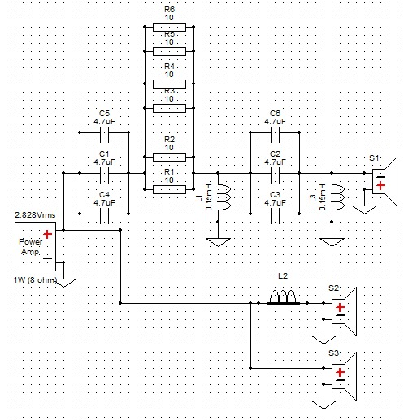

Proiect Boxă Audio High-Fidelity
🔊 Construcția Incintei Acustice
Acesta este unul dintre cele mai complexe proiecte de electronică și acustică pe care le-am realizat. Este o incintă acustică pe 2 căi, construită pentru a oferi o claritate superioară a sunetului. Am folosit un difuzor de medii-bași (woofer) marca Alien pentru frecvențele joase și un tweeter cu horn pentru frecvențele înalte, asigurând o dispersie optimă a sunetului. Designul include porturi bass-reflex frontale, calculate pentru a extinde răspunsul în frecvență.
⚡ Crossover-ul (Filtrul de Frecvență)
Pentru a separa frecvențele corect între cele două difuzoare, am proiectat și realizat un Crossover de ordin 3. Acesta are rolul de a direcționa frecvențele joase către woofer și pe cele înalte către tweeter, protejând componentele și eliminând distorsiunile. Schema electrică utilizează bobine (inductanțe) pentru a filtra frecvențele înalte pe canalul de bas și condensatori de polipropilenă pentru a bloca frecvențele joase pe canalul de înalte. Grupurile de rezistențe sunt folosite pentru atenuare (L-Pad), echilibrând volumul tweeterului cu cel al wooferului.
Circuitul final a fost realizat pe o placă de test perforată, folosind componente de calitate (condensatori audio, rezistențe de putere ceramice și bobine cu miez de aer Visaton) pentru a minimiza pierderile de semnal.